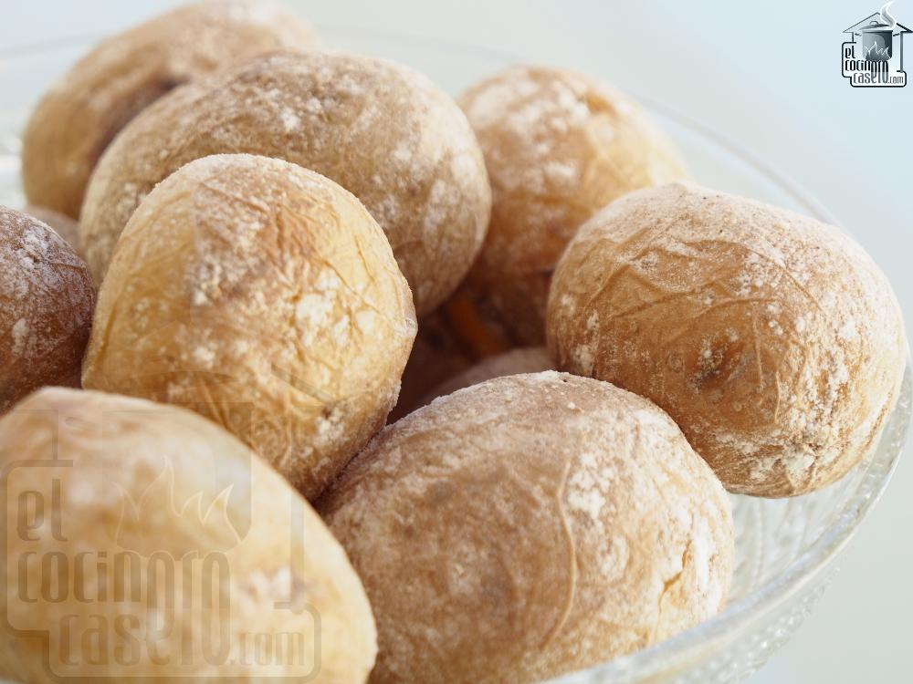

PAPAS ARRUGADAS - CANARIAN WRINKLED POTATOES

Description
In this recipe we will teach you how to cook Canarian wrinkled potatoes, also known as papas arrugadas, which is
a typical dish from the Canary Islands, Spain.
Although the dish itself is very easy to make, it is extremely important to know that it will be difficult to find the appropiate potatoes.
Ingredients
- 1 kilogram of small potatoes in their jackets (from the Canary Islands if possible)
- Tap water
- 5 tablespoons of sea salt
- 1/2 a lemon
Steps
- Take the small potatoes and wash them thoroughly, scrubbing all the dirt from their skin. Do not peel them!
- Place the washed potatoes in a pot and cover them with water and four or five tablespoons of sea salt and half a lemon
- Let them boil for about 20 minutes unitl they are tender enough. To check this you can try poking the potatoes with a sharp knife
- Pour off most of the water and return to heat
- Keep moving the potatoes around until the pot gets dry
- Now that they are ready to eat I recommend to add mojo sauce
- Enjoy!